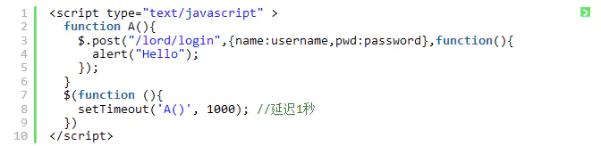
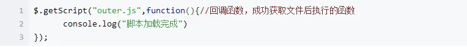
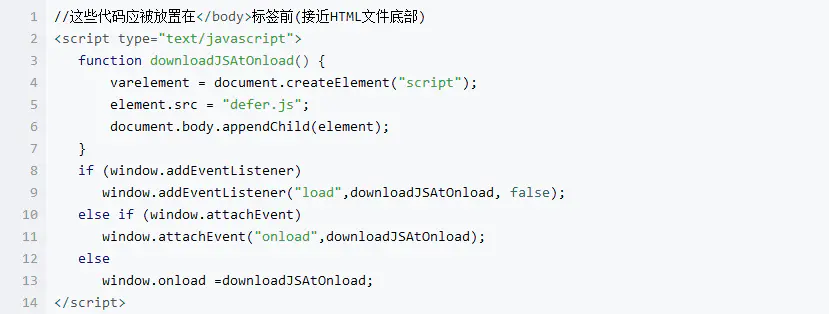

性能优化
渲染
- 减少DOM节点
- 合理使用requestAnimationFrame替代setTimeout
- css放顶部，js脚本底部加载（详情见：HTML+CSS----12条：src和link的区别）（css引用使用link，而不是@important）
html顺序加载执行文档和脚本，如若脚本自身延迟问题，就会导致页面白屏。因此js应该放到页面底部或者延迟加载
- 重排（布局改变）的代价大于重绘（不影响布局），所以：避免：CSS表达式（cal()）、table布局、js设置样式、img应该提前指定宽高
资源
- 压缩html/css/js/img
- icon用iconfont字体库
- 组件复用，按需、异步加载组件
- 1.路由懒加载：component: () => import('@/views/index.vue')
- 2.组件属性 is
- 3.Vue.extend()
- 组件懒加载（ () => import('@/pages/dialogInfo') ）
图片懒加载，骨架屏优化白屏时长（可用插件）、长列表虚拟滚动（可用插件）
- 缓存一切可缓存的资源（强缓存、协商缓存）
图片懒加载实现原理：由于浏览器会自动对页面中的img标签的src属性发送请求并下载图片，可以通过html5自定义属性data-xxx先暂存src的值，然后在图片出现在屏幕的可视区域的时候，再将data-xxx的值重新赋值到img的src属性即可
网络
- 减少不必要的http请求（防抖、节流）
JS延迟加载
- setTimeout

script标签放到页面最后执行
$.getScript(‘out.js’，function(){} )加载脚本
defer和async
- 相同点：异步加载脚本；
- 不同点：defer是文档加载完后顺序执行脚本，async下载完立马执行脚本然后再继续解析文档
- 动态创建DOM方式
雅虎 13条技巧提高网页速度
网页打开速度,是网站做SEO的一个重要方面,包括搜索引擎本身也会对自己的网页考虑这个问题:最近，雅虎的Exceptional Performance团队在其开发者网络上提出了提高网页打开速度的13条规则，其中包括“减少http请求“，避免网页转向"等具体内容如下：
- 1.减少http请求
- 2.减少多媒体，图片，声音的使用，传输以文字内容为先
- 3.用截止时间报头，由于时间是将来，对于缓存来说，可以减少部分http请求
- 4.支持Gzip
- 5.把CSS放在网页的顶部
- 6.活动的脚本文件放在底部
- 7.避免用CSS Expressions
- 8.把JavaScript和CSS单独化，与网页分离
- 9.减小DNS查表时间
- 10.最小化JavaScript
- 11.避免网页的转向
- 12.删除重复的脚本
- 13.配置Etags(注：etags就是emacs的建表程式)